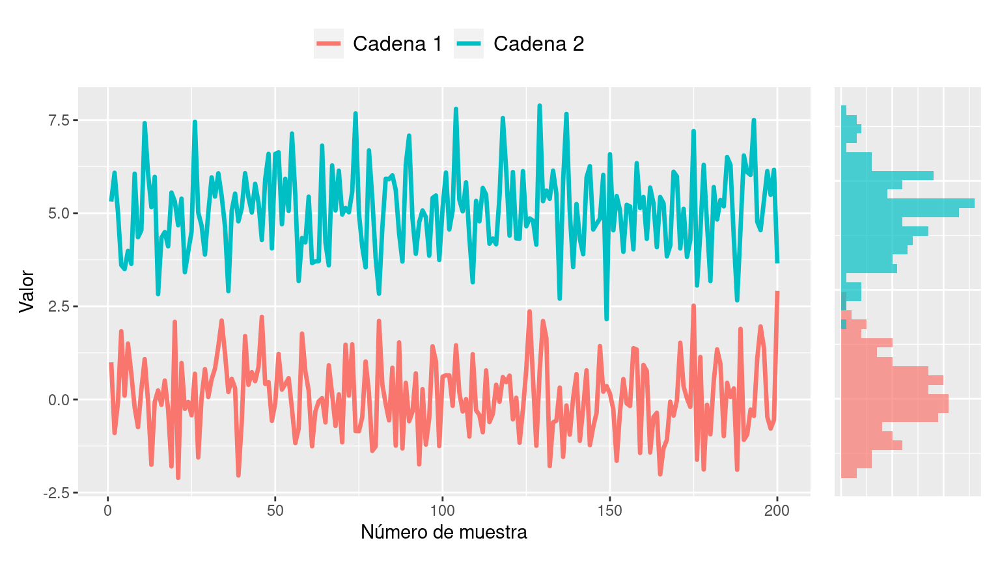
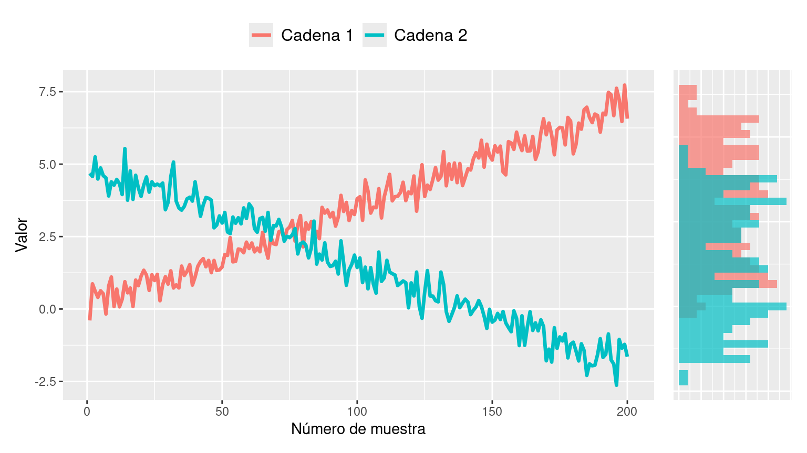
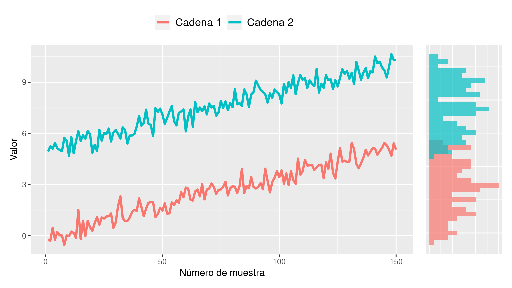
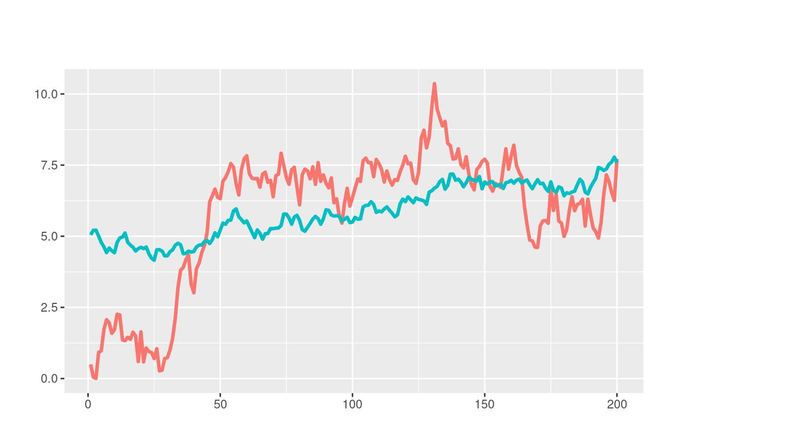
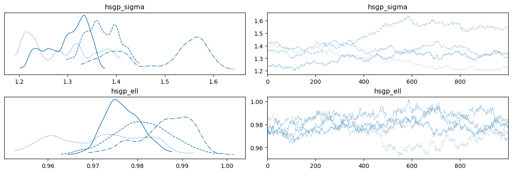
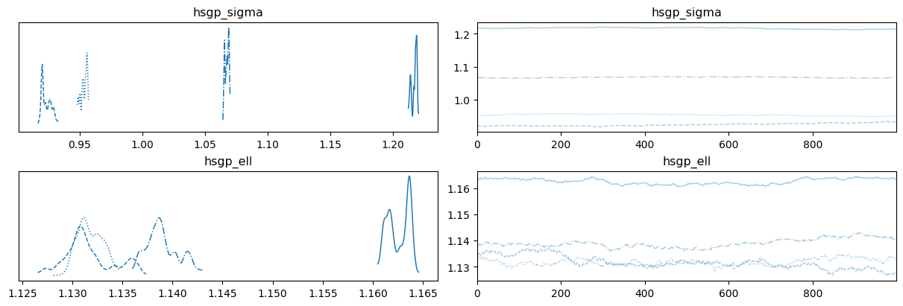

Práctica - Unidad 3
Métodos Computacionales
Esta sección contiene una lista exhaustiva de ejercicios que requieren el uso de herramientas computacionales para resolver problemas que involucran una variedad de cálculos, como el cálculo de probabilidades y el cálculo de integrales. Se vuelve indispensable el uso de R y se promueve el uso de buenas prácticas de programación científica, como el uso de funciones compartimentar los componentes de un programa.
¡A calcular probabilidades! (I)
Sea \(X \sim \text{Normal}(\mu=3, \sigma=1.2)\).
- Elabore un gráfico que permita visualizar la función de densidad de probabilidad de \(X\).
- ¿Cuál es la probabilidad de que \(X\) sea menor a 2.5?
- ¿Cuál es la probabilidad de que \(X\) sea mayor a 4?
- ¿Cuál es la probabilidad de que \(X\) sea mayor 2 y menor 3?
¡A calcular probabilidades! (II)
Sea \(X \sim \text{Beta}(\alpha=10, \beta=2)\).
- Elabore un gráfico que permita visualizar la función de densidad de probabilidad de \(X\).
- ¿Cuál es la probabilidad de que \(X\) sea menor a 0.5?
- ¿Cuál es la probabilidad de que \(X\) sea mayor a 0.8?
- ¿Cuál es la probabilidad de que \(X\) sea mayor 0.25 y menor 0.75?
Magia blanca: Obtener probabilidades mediante simulación
Responda los dos puntos anteriores sin evaluar la función de densidad ni la función de distribución de las variables aleatorias mencionadas. Para eso genere muestras que provengan de las correspondientes distribuciones y utilícelas para responder las preguntas mencionadas. Reflexione sobre las ventajas y desventajas de utilizar un enfoque basado en la simulación para resolver problemas.
Media y varianza de una variable aleatoria
Una variable aleatoria \(X\) toma valores en el conjunto \(\{2, 4, 6, 8, 10\}\) con igual probabilidad. Encuentre la media y el desvío estándar de las variables \(X\) e \(Y = 2X + 1\).
Probabilidades a posteriori
En un problema determinado la distribución a posteriori de la parámetro de inteŕes \(\alpha\) es \(\Gamma(k=3, \theta=1.5)\), donde \(k\) es el parámetro de forma y \(\theta\) es el parámetro de escala. Calcule la probabilidad de que \(\alpha^2\) sea mayor a 10.
Probabilidades con dos variables aleatorias
Sean \(X\) e \(Y\) dos variables aleatorias independientes con distribución uniforme en el intervalo \([0, 1]\).
- ¿Cuál es la probabilidad de que \(X \le Y\)?
- Grafique los puntos muestreados coloreando de acuerdo a si la muestra satisface el evento antes mencionado o no.
Te veo en la fotocopiadora
Dos estudiantes de estadística deciden encontrarse en la fotocopiadora de la Facultad entre las 10 y las 11 de la mañana, eligiendo el tiempo de llegada al azar. La estudiante A esperará 10 minutos luego de llegar. Si el estudiante B no llega en ese intervalo, se irá. Lo mismo hace el estudiante B, pero este decide esperar 14 minutos. ¿Cuál es la probabilidad de que se produzca el encuentro en la fotocopiadora entre la estudiante A y el estudiante B?
Armando celulares en Tierra del Fuego
Una máquina que se utiliza para ensamblar teléfonos celulares en una fábrica en Tierra del Fuego cuenta con tres componentes críticos para su funcionamiento. Ante una falla en cualquiera de estos componentes, la máquina se detiene. Las probabilidades de que estos elementos operen correctamente durante un día cualquiera son \(p_1 = 0.8\), \(p_2 = 0.9\) y \(p_3 = 0.7\). Responda las siguientes preguntas utilizando técnicas de simulación:
- ¿Cuál es la probabilidad de que la máquina falle en el primer día de uso?
- ¿Cuál es la probabilidad de que la máquina siga funcionando luego de 10 días?
- ¿Cuál es la probabilidad de que la máquina falle en el día 7 de uso?
- Sea \(T=\) Cantidad de días que la máquina funciona ininterrumpidamente. Grafique la función de densidad de probabilidad de \(T\).
Bolas infinitas
Este tuit propone un problema muy interesante. Una urna contiene una bola azul y una amarilla. Se elije una bola al azar y se la vuelve a colocar junto con otra bola adicional del mismo color. Se repite este proceso indefinidamente. ¿Qué ocurre con la proporción de bolas azules en la urna a medida que repetimos más y más veces?
- Tiende a 1/2.
- Tiende a 0 ó a 1.
- No se estabiliza.
- Ninguna de las anteriores.
Escriba un programa en
Rpara responder esta pregunta utilizando simulaciones. Genere gráficos que faciliten la comprensión del resultado.Estimando el valor de \(\pi\)
Imagine un círculo de radio \(r\) y un cuadrado de lado \(2r\), ambos centrados en el mismo punto, que de manera arbitraria puede ser el punto \((0, 0)\). Obtenga muestras de una distribución uniforme en el plano \((x, y)\), cuyo dominio está acotado por el cuadrado antes mencionado. Para cada muestra extraida, determine si se encuentra dentro del círculo o no – todos las muestras se encontrarán dentro del cuadrado. Utilice esta información para estimar el valor de \(\pi\).
Algunos datos útiles
- Area de un círculo: \(\pi \cdot r^2\).
- Area de un cuadrado: \(a^2\), donde \(a\) es la longitud del lado.
Los puntos uniformes
Se seleccionan dos puntos de manera uniforme e independiente dentro de un círculo. ¿Cuál es la probabilidad de que la distancia entre dos puntos sea menor al radio?
- Resuelva el problema utilizando
R. - Elabore una visualización que facilite la comunicación de los resultados.
- Resuelva el problema utilizando
Sobre el histórico 7 a 1 del 2014
En la Copa del Mundo de la FIFA 2014, Alemania jugó contra Brasil en la semifinal. Los alemanes hicieron el primer gol a los 11 minutos y el segundo a los 23. Asuma que el tiempo entre goles sigue una distribución exponencial. Elija una distribución a priori para el tiempo entre goles (puede ser conjugada o no). En ese momento del partido,
- ¿Cuál es la distribución a posteriori del tiempo entre goles de Alemania?
- ¿Cuántos goles cabría esperar que Alemania hiciera al finalizar los 90 minutos?
- ¿Cuál era la probabilidad de que Alemania hiciera más de 5 goles (cosa que ocurrió)?
¿Tendré que esperar mucho?
El tiempo que un empleado de recursos humanos demora en hacer una entrevista tiene distribución exponencial con media 30 minutos. Los tiempos de duración de cada entrevista se pueden considerar independientes entre sí. Las entrevistas a postulantes para un trabajo están programadas cada 15 minutos, comenzando desde las 8. Es válido considerar que todos los postulantes llegan puntuales a su entrevista. Cuando la persona del turno de las 8:15 llega a la oficina
- ¿Cuál es la probabilidad de que tenga que esperar antes de ser entrevistada?
- ¿Cuál es el horario esperado al que terminará su entrevista?
¡Qué casualidad!
Dos personas se conocen en la fila de embarque para un vuelo en un avión Airbus A330-300. Considere que el Airbus A330-300 tiene 30 filas de 2-4-2 asientos.
- ¿Cuál es la probabilidad de que tengan asientos en la misma fila?
- ¿Cuál es la probabilidad de que estén sentados en asientos adyacentes?
El Problema de Monty Hall
El Problema de Monty Hall es un problema de probabilidad basado en un juego del concurso televisivo estadounidense “Trato hecho”. En este problema, el concursante debe elegir una puerta entre tres, todas cerradas. El premio consiste en llevarse lo que se encuentra detrás de la elegida. Se sabe con certeza que tras una de ellas se oculta un automóvil, y tras las otras dos hay cabras. Una vez que el concursante haya elegido una puerta y comunicado su elección a los presentes, el presentador, que sabe lo que hay detrás de cada puerta, abrirá una de las otras dos en la que haya una cabra. A continuación, le da la opción al concursante de cambiar, si lo desea, de puerta (tiene dos opciones). ¿Debe el concursante mantener su elección original o escoger la otra puerta? ¿Hay alguna diferencia? Resuelva este ejercicio utilizando simulaciones.

Las 3 puertas del problema de Monty Hall Que los cumplan feliz
Basándose en el siguiente tuit y conociendo el problema del cumpleaños (¿cuántas personas debe haber en una habitación para que la probabilidad de que dos de ellas cumplan años el mismo día sea mayor a X%?) construir un gráfico similar al del tuit donde se grafique la probabilidad de que haya \(n\) personas que cumplan años el mismo día para \(K\) personas presentes en la habitación.
Qué suerte, ¿no?
Previo a la final de la Copa América 2021, los jugadores de la Selección Argentina se reúnen en la habitación del hotel como se describe en este tuit.
- ¿Cuál es la probabilidad de que un jugador adivine una de diez cartas?
- ¿Cuál es la probabilidad de que tres de ellos adivinen una de diez cartas?
El álbum del Campeón
El álbum oficial del Mundial de Fútbol de Qatar 2022 consta de 638 figuritas. Cada paquete trae cinco figuritas.
- Comprando cinco paquetes, ¿cuál es la probabilidad de tener a Messi?
- Comprando cinco paquetes, ¿cuál es la probabilidad de sacar a Messi repetido?
- ¿Cuántos paquetes se necesitan, en promedio, para completar el álbum?
- Si a una persona le faltan diez figuritas para completar el álbum, ¿cuántos paquetes tiene que comprar para asegurarse de lograrlo?
¿Que tán raras son estas secuencias raras?
Si se arroja una moneda \(n\) veces, ¿cuál es la probabilidad de que no haya secuencias de \(k\) caras?
Un viaje por el elevador
¿Cuál es la probabilidad de que tres personas en un ascensor con doce pisos presionen para ir a tres pisos consecutivos? ¿Qué supuestos realiza para resolver el problema? Escríbalos en una lista de manera explícita.
La vida es muy corta como para perderla ordenando medias
Un cajón contiene 10 pares de medias. No hay dos pares iguales. Por fiaca, el dueño de las medias no las agrupa después de lavarlas y simplemente las pone en el cajón. Al momento de necesitar un par de medias, saca una tras una hasta que se forma un par. En promedio, ¿cuántas medias sacará hasta encontrar un par?
¿Vale la pena hacer un ensayo clínico a gran escala?
Dados los resultados de un estudio piloto, la probabilidad a posteriori de que la droga desarrollada por tu compañía sea mas efectiva que el tratamiento actual es \(\theta \in [0, 1]\). Tu compañía está considerando realizar un ensayo clínico a gran escala para confirmar que la droga que desarrollan es de hecho mejor. El costo del estudio es $X. Si la droga es mejor, la probabilidad de que esto se confirme en el ensayo es del 80%. Si la droga no es mejor, hay una probabilidad del 5% de que el estudio confirme que es mejor. Si el ensayo sugiere que tu droga es mejor, ganarás $cX. ¿Para qué valores de \(\theta\) y \(c\) tiene sentido realizar el estudio?
El problema de concordancia
Resuelva el problema de concordancia de de Montmort presentado en la Práctica 0 utilizando simulaciones.
El problema de los sobres
Resuelva el problema de los dos sobres presentado en la Práctica 0 utilizando simulaciones.
Integración por muestreo
Calcule las siguientes integrales utilizando muestras.
- \(\displaystyle \int_{-\infty}^{\infty}{\frac{x^2}{\sqrt{2\pi}}\exp \left(-\frac{x^2}{2} \right)dx}\)
- \(\displaystyle \int_{1}^{\infty}{\frac{x^3}{\sqrt{2\pi}}\exp \left(-\frac{x^2}{2} \right)dx}\)
- \(\displaystyle \int_{1}^{\infty}{\frac{x^6}{\sqrt{2\pi}}\exp \left(-\frac{x^2 - 4x}{2} \right)dx}\)
- \(\displaystyle \int_{1}^{10}{x^6\frac{e^{-x^4/2}}{\sqrt{2\pi}}dx}\)
¿Cuál es la distribución de muestreo aproximada al usar muestreo independiente para evaluar integrales?
Aproximación de una distribución mediante una grilla
En esta parte de la práctica se comienza a utilizar técnicas computacionales que se asocian directamente a la práctica de la estadística bayesiana. Los problemas tienen como objetivo la familiarización con el uso práctico de estas técnicas y la comprensión de sus características principales.
Aproximación de grilla
Se tiene un experimento binomial donde \(n=80\) y se observan \(y=7\) éxitos. Considere que el prior de la probabilidad de éxito \(\theta\) es \(\text{Beta}(2, 10)\).
- Obtenga la distribución a posteriori de \(\theta\) de manera analítica y grafíquela.
- Obtenga la distribución a posteriori de \(\theta\) utilizando el método de la grilla en base a una grilla de 10 puntos y dibuje la curva obtenida en el gráfico creado anteriormente.
- Repita el proceso del punto anterior utilizando una grilla de 100 puntos.
- Concluya sobre la fidelidad de las aproximaciones. ¿Considera que es necesario utilizar una grilla más densa? ¿Cuáles serían las ventajas y desventajas?
Cálculo de probabilidades en base a la grilla (I)
En base al posterior obtenido en el ejercicio anterior mediante el método de la grilla calcule las siguientes probabilidades
- \(P(\theta < 0.7)\).
- \(P(\theta > 0.05)\).
- \(P(0.05 < \theta < 0.15)\).
De ser necesario, obtenga el posterior mediante una grilla de mayor densidad.
Cálculo de probabilidades en base a la grilla (II)
Utilice los valores de la grilla y sus probabilidades a posteriori para obtener muestras del posterior y calcular las mismas probabilidades que en el ejercicio anterior en base a muestras. Ayuda: Para obtener muestras utilice la función
sample().Aproximación de grilla en 2 dimensiones
Sean dos variables aleatorias continuas \(X\) e \(Y\) tales que \((X, Y) \in \mathbb{R}^2\), y sea el siguiente modelo de regresión lineal simple:
\[ \begin{aligned} \alpha &\sim \text{Normal}(0, 1.5) \\ \beta &\sim \text{Normal}(0, 2) \\ Y &\sim \text{Normal}(\alpha + \beta X, 0.8) \end{aligned} \]
- Obtenga el posterior conjunto del vector de parámetros \([\alpha, \beta]^T\) mediante el método de la grilla. Elabore un gráfico que permita visualizar esta distribución.
- Obtenga el posterior marginal de \(\alpha\) y grafíquelo.
- Obtenga el posterior marginal de \(\beta\) y grafíquelo.
- Calcule la probabilidad de que el intercepto sea mayor a 0.95.
- Calcule la probabilidad de que la pendiente sea menor a -2.
Para responder las consignas utilice los datos simulados que se obtienen con el siguiente bloque de código:
set.seed(121195) alpha <- 1 beta <- -2 sigma <- 0.8 n <- 80 x <- rnorm(n) y <- rnorm(n, alpha + beta * x, sigma) df <- data.frame(x = x, y = y)Bonus: ¿Cómo podría responder las consignas (ii)-(v) utilizando muestras del posterior?
Escalando la aproximación de la grilla
Suponga que se tiene que estimar un posterior utilizando la aproximación mediante una grilla de 200 puntos en cada dimensión. Calcule cúantas veces se tiene que evaluar el posterior en cada uno de los siguientes escenarios:
- 1 dimensión.
- 2 dimensiones.
- 3 dimensiones.
- 5 dimensiones.
- 10 dimensiones.
Concluya sobre las ventajas y desventajas de la aproximación de la grilla teniendo en cuenta sus características conforme se incrementa el número de dimensiones del posterior.
Benchmark de la aproximación de la grilla
El siguiente bloque de código define una función llamada
create_and_eval_grid()que evalúa la función de densidad normal en una cantidad arbitraria dimensiones. El argumentodimension_nindica la dimensionalidad de la distribución normal, ygrid_nindica la cantidad de puntos en la grilla de cada dimensión. Debajo, se utiliza la funciónmark()del paquete{bench}para comparar el desempeño de la funcióncreate_and_eval_grid()con diferentes números de dimensiones.create_and_eval_grid <- function(dimension_n, grid_n = 100) { grid <- seq(-3, 3, length.out = grid_n) grids <- replicate(dimension_n, grid, simplify = FALSE) df <- expand.grid(grids, KEEP.OUT.ATTRS = FALSE) Mu <- rep(0, dimension_n) Sigma <- diag(dimension_n) mvtnorm::dmvnorm(df, mean = Mu, sigma = Sigma) } bench::mark( create_and_eval_grid(1), create_and_eval_grid(2), check = FALSE, max_iterations = 500 )Modifique el código brindado para evaluar la función de densidad en hasta un máximo de 10 dimensiones. Concluya sobre el tiempo de ejecución, el consumo de memoria, y otras cantidades que se encuentren en la salida y crea adecuadas para el análisis.
Metropolis-Hastings
En esta sección, se profundiza en la práctica de uno de los algoritmos fundamentales de la inferencia estadística bayesiana: el algoritmo de Metropolis-Hastings.
Muestreo utilizando el algoritmo de Metropolis-Hastings (I)
Use el algoritmo de Metropolis-Hastings y una distribución de propuesta \(\text{Normal}(0, 0.1)\) para obtener 5000 muestras de las siguientes distribuciones de probabilidad:
- \(\text{Normal}(\mu = 3, \sigma = 6)\).
- \(\text{StudentT}(\nu = 5)\).
- \(\frac{2}{3}\text{Normal}(\mu = 0, \sigma = 0.5) + \frac{1}{3}\text{Normal}(\mu = 3, \sigma = 2)\).
Grafique las distribuciones obtenidas utilizando un histograma o una estimación de densidad y superponga la función de densidad verdadera para realizar una comparación. Concluya sobre la similitud de las mismas y la aptitud de la distribución de propuesta utilizada.
Simplificando el algoritmo de Metropolis-Hastings
La distribución de propuesta utilizada en el ejercicio anterior goza de una propiedad que permite simplificar el algoritmo de Metropolis-Hastings.
- ¿Cuál es esta propiedad?
- ¿Qué simplificación se puede hacer?
- ¿Qué nombre recibe la versión simplificada del algoritmo?
- Implemente la versión simplificada del algoritmo de Metropolis-Hastings y obtenga nuevamente 5000 muestras para las distribuciones presentadas en el ejercicio anterior utilizando la nueva implementación.
Muestreo utilizando el algoritmo de Metropolis-Hastings (II)
Use el algoritmo de Metropolis-Hastings y una distribución de propuesta que crea conveniente para obtener 5000 muestras de las siguientes distribuciones de probabilidad:
- \(\text{Beta}(\alpha=4, \beta=8)\).
- \(\text{Gamma}(k = 3, \theta = 2)\).
- \(\frac{1}{2}\text{Beta}(\alpha=10, \beta=3) + \frac{1}{2}\text{Beta}(\alpha=3, \beta=10)\).
Realice un análisis similar al realizado en el Ejercicio 1.
¡A jugar con la distribución de propuesta!
Suponga que se desea obtener muestras de una distribución \(\text{Normal}(4, 1)\) utilizando Metropolis-Hastings y la siguiente distribución de propuesta:
\[ \mu' | \mu \sim \text{Uniforme}(\mu - w, \mu + w) \]
Obtenga \(n=5000\) muestras con \(w \in \{0.01, 1, 100\}\) y compute la probabilidad de aceptación. Luego, para cada \(w\), grafique la distribución obtenida y visualice la cadena de Markov utilizando un traceplot.
- ¿Cómo se relaciona \(w\) con el desempeño del muestreo?
- ¿Cómo se relaciona \(w\) con la probabilidad de aceptación? Justifique su respuesta utilizando la ecuación del criterio de aceptación.
Modelo Normal-Normal
Se desea estudiar el tiempo promedio que los estudiantes de estadística dedican por semana a la materia Estadística Bayesiana. Para eso se propone utilizar un modelo Normal-Normal, con \(\sigma=1.2\) conocido.
- Elija una distribución a priori para el parámetro \(\mu\).
- Describa el modelo matemáticamente.
- Determine una distribución de propuesta adecuada para este problema. Explique.
- Obtenga 2000 muestras del posterior de \(\mu\). Ajuste los parámetros de la distribución de propuesta hasta que los resultados se vean adecuados.
- Grafique un histograma de las muestras obtenidas y concluya sobre el desempeño de la aproximación.
Para resolver este problema utilice los datos que se leen con el siguiente codigo:
url <- paste0( "https://raw.githubusercontent.com/estadisticaunr/", "estadistica-bayesiana/main/datos/tiempo-estudio-eb.csv" ) df_estudio <- readr::read_csv(url)Modelo Beta-Binomial
Se desea estimar el posterior del parámetro \(\pi\) en el siguiente modelo Beta-Binomial:
\[ \begin{aligned} Y &\sim \text{Binomial}(n, \pi) \\ \pi &\sim \text{Beta}(2, 3) \end{aligned} \]
Se observan \(n=10\) ensayos de Bernoulli y se registran \(y=3\) éxitos. Determine una distribución de propuesta adecuada y obtenga muestras de la distribución a posteriori del parámetro \(\pi\) utilizando el algoritmo de Metropolis-Hastings.
De ser necesario, ajuste los parámetros de la distribución de propuesta.
Modelo Poisson
En el ejercicio ¡Ostras! ¡Estoy haciendo inferencia bayesiana! de la Práctica 1 se reportó que la cantidad de especies marinas bivalvas descubiertas cada año entre 2010 y 2015 fue 64, 13, 33, 18, 30 y 20.
Sea \(Y_t\) la cantidad de especies descubiertas en el año \(2009 + t\) (e.g. \(Y_1 = 64\) es el conteo para el año 2010) y el siguiente modelo:
\[ \begin{aligned} Y_t &\sim \text{Poisson}(\lambda_t) \\ \lambda_t &= \exp (\alpha + \beta t) \\ \alpha &\sim \text{Normal}(0, 10^2) \\ \beta &\sim \text{Normal}(0, 10^2) \end{aligned} \]
Ajuste el siguiente modelo utilizando Metropolis-Hastings y verifique la convergencia de las cadenas de Markov.
Metropolis-Hastings multivariado
Use el algoritmo de Metropolis Hastings para obtener 1000 muestras de la distribución \(\text{MVN}(\pmb{\mu}, \pmb{\Sigma})\) donde
\[ \begin{array}{cc} \pmb{\mu} = \begin{bmatrix}1.2 \\ 0.8 \end{bmatrix}, & \pmb{\Sigma} = \begin{bmatrix}3 & 0.2 \\ 0.2 & 2 \end{bmatrix} \end{array} \]
Utilice una distribución de propuesta \(\text{MVN}(\mathbf{0}_2, \mathbf{I}_2\sigma)\) con \(\sigma = 0.2\).
Metropolis-Hastings para regresión
Repita el ejercicio Aproximación de grilla en 2 dimensiones pero utilice Metropolis-Hastings para obtener muestras del posterior en vez del método de la grilla.
Demostración sobre la distribución estacionaria
Demostrar que la distribución estacionaria del algoritmo de Metropolis-Hastings es la distribución objetivo \(p(\pmb{\theta} | \mathbf{y})\)
Diagnósticos
El uso de algoritmos de MCMC provee de un gran poder que conlleva una gran responsabilidad. En los ejercicios de esta sección ya se cuenta con un posterior y se busca evaluar la fiabilidad de las muestras utilizando diferentes medidas de diagnóstico análiticas y gráficas.
Describir medidas de diagnóstico (I)
En sus propias palabras, explique que son \(\text{ESS}\), \(\hat{R}\) y \(\text{MCSE}\). Considere:
- ¿Qué miden?
- ¿Qué potencial problema de MCMC detectan?
Describir medidas de diagnóstico (II)
En sus propias palabras, explique por qué las técnicas de estimación del posterior basadas en MCMC necesitan diagnósticos de convergencia. En particular, contraste estos con los métodos conjugados descritos en la Unidad 2 que no necesitan esos diagnósticos. ¿Qué es diferente entre los dos métodos de inferencia?
Problemitas de MCMC
Para cada escenario de simulación mediante MCMC descrito a continuación, explique cómo el escenario podría afectar la aproximación del posterior.
- La cadena se mezcla muy lentamente.
- La cadena presenta alta auto-correlación.
- La cadena tiende a quedarse “trabada”.
Vamos de paseo
Elabore traceplots que le permitan visualizar la traza de la cadena de Markov utilizada en el ejercicio Modelo Normal-Normal de la sección Metropolis-Hastings.
Luego, repita el ejercicio utilizando 4 cadenas independientes y grafique sus trazas en un mismo gráfico. ¿Qué puede concluir sobre la convergencia y la mezcla de las cadenas?
Primeros pasitos con \(\hat{R}\)
Repita lo realizado en el ejercicio Modelo Beta-Binomial de la sección Metropolis-Hastings utilizando 4 cadenas independientes. Luego:
- Calcule la varianza intra-cadenas \(W\).
- Calcule la varianza entre-cadenas \(B\).
- Calcule \(\hat{R}\) y concluya sobre el resultado obtenido.
\(\hat{R}\) para un muestreo independiente
En un determinado problema se encuentra que el posterior del parámetro \(\pi\) de un modelo con verosimilitud binomial está dado por
\[ \pi | \mathbf{y} \sim \text{Beta}(12, 6) \]
- Obtenga 4 conjuntos independientes de 1000 muestras independientes de esta distribución.
- Calcule \(W\), \(B\), y \(\hat{R}\) considerando que cada conjunto representa una cadena.
- Explique el resultado de \(\hat{R}\).
Bonus
- ¿Se puede concluir que cada uno de los muestreos realizados representan realizaciones de una cadena de Markov? ¿Por qué?
- ¿Por qué no fue necesario descartar un conjunto de muestras de warm-up?
Función de autocorrelación
Utilice las 4 cadenas obtenidas en el ejercicio Primeros pasitos con \(\hat{R}\) y grafique la función de autocorrelación y calcule el coeficiente de autocorrelación utilizando un rezago unitario. Concluya sobre la dependencia entre las muestras obtenidas.
Tamaño de muestra efectivo
Utilice las muestras obtenidas en el ejercicio anterior para calcular el tamaño de muestra efectivo.
Experimentos con el tamaño de muestra efectivo
Suponga una distribución \(\text{Normal}(0, 1^2)\). Obtenga \(n\) muestras independientes utilizando
rnorm()y \(n\) muestras dependientes utilizando Metropolis-Hastings con \(n \in \{10, 50, 100, 500, 1000, 10000\}\).- Calcule el temaño de muestra efectivo en todos los escenarios simulados.
- Describa el comportamiento del tamaño de muestra efectivo conforme se incrementa el número de muestras.
- ¿Por qué se observan los comportamientos descritos?
¡Rompan todo! Un caso simulado
Los siguientes gráficos muestran las trazas y las distribuciones que resultan al obtener muestras de un posterior utilizando dos cadenas de Markov independientes. Estos muestreos fueron realizados de manera que presenten algunos problemas. Describa cuales son los problemas que puede observar en los siguientes gráficos y explique por qué no utilizaría estas muestras para obtener conclusiones sobre el posterior.

Gráfico 1 
Gráfico 2 
Gráfico 3 
Gráfico 4 ¡Rompan todo! Un caso real
Al igual que en el ejercicio anterior, se presentan traceplots donde el muestreo del posterior presenta problemas. En este caso, los gráficos que se observan fueron obtenidos en el marco de un problema real, y se usan 4 cadenas en vez de 2. Nuevamente, describa cuales son los problemas que puede observar en los siguientes gráficos y explique por qué no utilizaría estas muestras para obtener conclusiones sobre el posterior.

Gráfico 1 
Gráfico 2 Además, responda:
- ¿Cuál gráfico se asocia a un mayor tamaño de muestra efectivo?
- ¿Qué grafico muestra peor mezcla entre cadenas?
- ¿En qué gráfico se puede observar que las cadenas convergen a la misma distribución?
Programación probabilística - Stan y RStan
En esta sección se comienza a utilizar Stan para realizar los cálculos relacionados a la inferencia bayesiana. Stan es uno de los lenguajes de programación probabilística mas potentes y populares en la actualidad. Los ejercicios contienen modelos estadísticos que deben ser resueltos con la interface de Stan a R, {RStan}.
MCMC con RStan: Precalentamiento (I)
Utilice la información proporcionada para definir la estructura del modelo bayesiano utilizando
{RStan}. No es necesario ejecutar nada, solo necesita proporcionar el código correcto.- \(Y | \pi \sim \text{Binomial}(\pi, 20)\) con \(\pi \sim \text{Beta}(1, 1)\).
- \(Y | \lambda \sim \text{Poisson}(\lambda)\) con \(\lambda \sim \text{Gamma}(4, 2)\).
- \(Y | \mu \sim \text{Normal}(\mu, 1^2)\) con \(\mu \sim \text{Normal}(0, 10^2)\).
MCMC con RStan: Precalentamiento (II)
Utilice la información proporcionada para (1) definir la estructura del modelo bayesiano y (2) obtener muestras del posterior utilizando
{RStan}. No es necesario ejecutar nada, solo necesita proporcionar el código correcto.- \(Y | \pi \sim \text{Binomial}(\pi, 20)\) con \(\pi \sim \text{Beta}(1, 1)\) e \(y = 12\).
- \(Y | \lambda \sim \text{Poisson}(\lambda)\) con \(\lambda \sim \text{Gamma}(4, 2)\) e \(y = 3\).
- \(Y | \mu \sim \text{Normal}(\mu, 1^2)\) con \(\mu \sim \text{Normal}(0, 10^2)\) e \(y = 12.2\).
Modelo Beta-Binomial con RStan (I)
Considere el modelo Beta-Binomial para \(\pi\) con \(Y | \pi \sim \text{Binomial}(\pi, n)\) y \(\pi \sim \text{Beta}(3, 8)\). Suponga que en \(n = 10\) ensayos independientes observa \(y = 2\) éxitos.
- Obtenga muestras del posterior de \(\pi\) con
{RStan}utilizando 3 cadenas y 12000 iteraciones por cadena. - Grafique la traza de cada una de las tres cadenas.
- ¿Cuál es el rango de valores en el eje x del traceplot? ¿Por qué el valor máximo de este rango no es 12000?
- Cree un gráfico que permita visualizar la función de densidad de los valores obtenidos con cada una de las tres cadenas.
- Utilizando lo estudiado en la Unidad 2, especifique el posterior de \(\pi\). ¿Cómo se compara con la aproximación mediante MCMC?
- Obtenga muestras del posterior de \(\pi\) con
Modelo Beta-Binomial con RStan (II)
Repita el ejercicio anterior utilizando \(\pi \sim \text{Beta}(4, 3)\), donde observa \(y = 4\) éxitos en \(n = 12\) ensayos independientes.
Modelo Gamma-Poisson con RStan (I)
Considere el modelo Gamma-Poisson para \(\lambda\) con \(Y_i | \lambda \sim \text{Poisson}(\lambda)\) y \(\lambda \sim \text{Gamma}(20, 5)\). Suponga que cuenta con \(n = 3\) observaciones independientes \((y_1, y_2, y_3) = (0, 1, 0)\)
- Obtenga muestras del posterior de \(\lambda\) con
{RStan}utilizando 4 cadenas y 10000 iteraciones por cadena. - Grafique la traza y la función de densidad de cada una de las tres cadenas.
- A partir del gráfico de la función de densidad, ¿cuáles suelen ser, a posteriori, los valores más probables de \(\lambda\)?
- Utilizando lo estudiado en la Unidad 2, especifique el posterior de \(\lambda\). ¿Cómo se compara con la aproximación mediante MCMC?
- Obtenga muestras del posterior de \(\lambda\) con
Modelo Gamma-Poisson con RStan (II)
Repita el ejercicio anterior utilizando el prior \(\lambda \sim \text{Gamma}(5, 5)\).
Modelo Normal-Normal con RStan (I)
Repita los mismos pasos del ejercicio Modelo Gamma-Poisson con Rstan (I) pero considere el modelo Normal-Normal para \(\mu\) con \(Y_i | \mu \sim \text{Normal}(\mu, 1.3^2)\) y \(\mu \sim \text{Normal}(10, 1.2^2)\). Suponga que cuenta con \(n = 4\) observaciones independientes \((y_1, y_2, y_3, y_4) = (7.1, 8.9, 8.4, 8.6)\)
Modelo Normal-Normal con RStan (II)
Repita el ejercicio anterior con el modelo Normal-Normal pero ahora considere \(Y_i | \mu \sim \text{Normal}(\mu, 8^2)\) y \(\mu \sim \text{Normal}(-15, 2^2)\). Suponga que en \(n = 5\) observaciones independientes observa \((y_1, y_2, y_3, y_4, y_5) = (−10.1, 5.5, 0.1,−1.4, 11.5)\)
Un modelo que es un poco ¿complicado?
Considere el siguiente modelo
\[ \begin{aligned} \text{mass}_i &\sim \text{Normal}(\mu_i, \sigma^2) \\ \mu_i &= \theta_1 + \theta_2 + \text{age}_i^{\theta_3} \\ \theta_1 &\sim \text{Normal}(0, 100^2) \\ \theta_2 &\sim \text{Uniforme}(0, 20000) \\ \theta_3 &\sim \text{Normal}(0, 1) \\ \sigma^2 &\sim \text{InvGamma}(0.01, 0.01) \end{aligned} \]
y los siguientes datos
edad <- c(2, 15, 14, 16, 18, 22, 28) peso <- c(29.9, 1761, 1807, 2984, 3230, 5040, 5654) n <- length(edad) data_list <- data.frame(peso = peso, edad = edad, n = n)- Ajuste el modelo utilizando
{RStan}. - Obtenga una visualización de la edad versus el peso junto con una curva que indique la media a posteriori de \(\mu_i\) para evaluar si el modelo ajusta bien.
- Estudie la convergencia de las cadenas de Markov.
- Mencione tres medidas que podría tomar para mejorar la convergencia.
- Ajuste el modelo utilizando
Otros
Una compañía pesquera de Comodoro Rivadavia se encuentra probando un nuevo método para estimar el peso de los peces que extrae del Mar Argentino. El objetivo de este método es obtener una estimación lo suficientemente buena del peso de cada pescado sin tener que pesarlos uno por uno, ya que es un proceso costoso en tiempo y labor. Para eso, seleccionaron una muestra de pescados, los pesaron y les midieron ciertos aspectos morfológicos (ancho, alto y largo). En el futuro, esperan recolectar estas mismas medidas morfológicas mediante una cámara especializada y utilizar un modelo para estimar el peso.
El modelo propuesto por el equipo de investigación es el siguiente:
\[ \begin{aligned} \log(\text{Peso}_i) &\sim \text{Normal}(\mu, \sigma) \\ \mu_i &= \beta_0 + \beta_1 \log(\text{Largo}_i) \\ \sigma &\sim \text{Gamma}(k, \theta) \end{aligned} \]
El peso se encuentra medido en gramos y la longitud en centímetros. El equipo provee las muestras que obtuvieron del posterior. Las mismas se pueden leer en
Rutilizando el siguiente bloque de código.url <- paste0( "https://raw.githubusercontent.com/estadisticaunr/", "estadistica-bayesiana/main/datos/fish-market-posterior.csv" ) df_posterior <- readr::read_csv(url) head(df_posterior)# A tibble: 6 × 3 intercepto pendiente sigma <dbl> <dbl> <dbl> 1 -4.44 3.08 0.408 2 -4.30 3.05 0.431 3 -4.49 3.12 0.433 4 -4.04 2.96 0.341 5 -4.76 3.18 0.413 6 -4.65 3.15 0.350- Analice de manera gráfica y analítica los posteriors marginales de los parámetros del modelo. Realice las transformaciones de parámetros que crea conveniente para facilitar la comprensión del análisis.
- Considere un pescado cuya longitud es de 30 centímetros.
- Obtenga y grafique la distribución a posteriori del peso medio.
- Obtenga y grafique la distribución predictiva a posteriori del peso.
- Interprete los resultados.
- Grafique la curva de regresión junto a una banda de credibilidad del 95% en el plano de las variables originales y en el plano de las variables transformadas.
- Agregue a los gráficos anteriores una banda de credibilidad del 95% para la distribución predictiva a posteriori. Interprete los resultados.
Referencias
Downey, Allen B. 2021. Think Bayes: Bayesian Statistics in Python. 2nd edition. O’Reilly Media. http://allendowney.github.io/ThinkBayes2/.
Martin, Osvaldo A., Ravin Kumar, y Junpeng Lao. 2021. Bayesian Modeling and Computation in Python. 1st edition. Chapman; Hall/CRC.